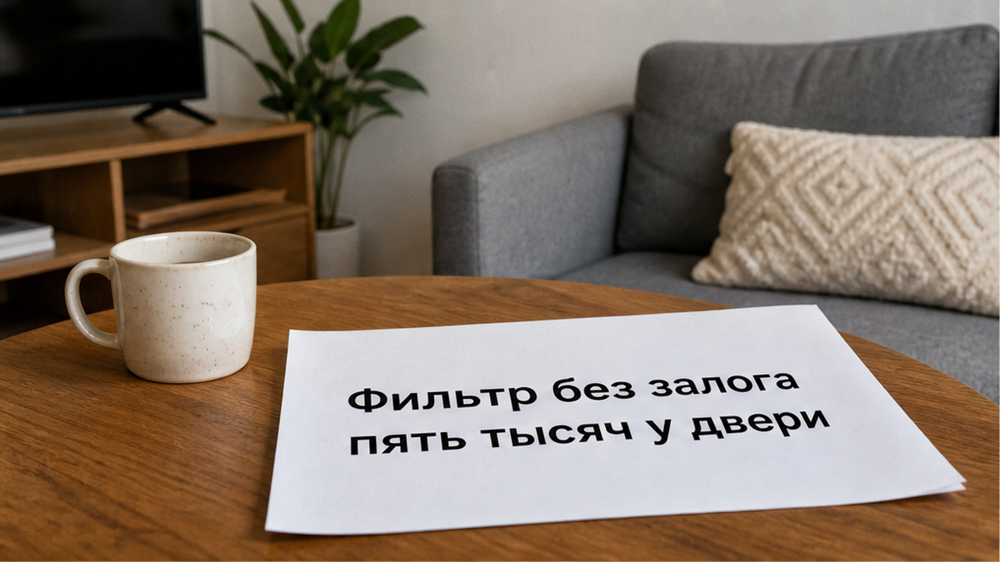
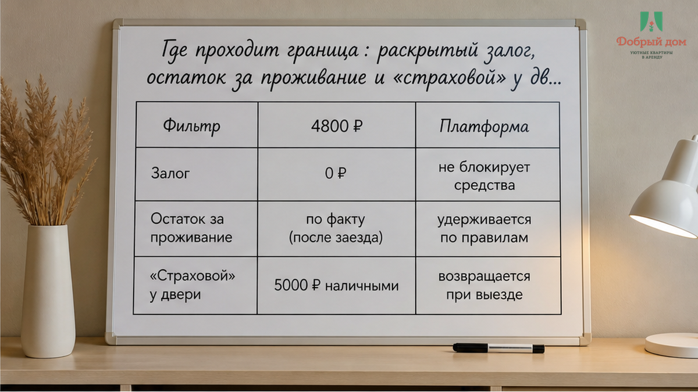
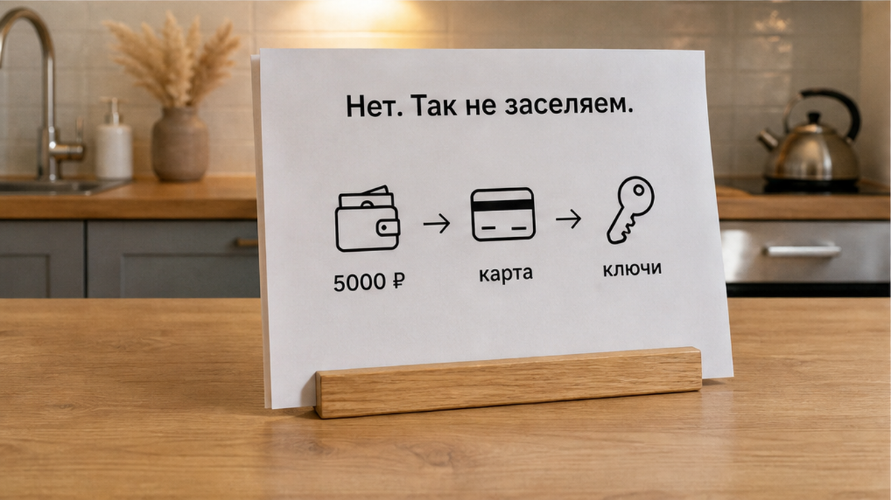
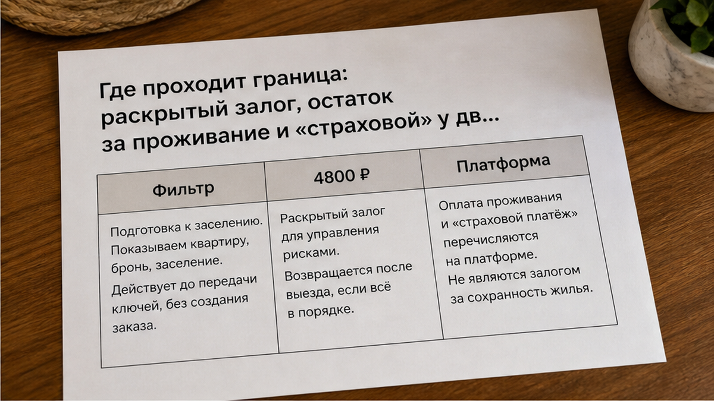
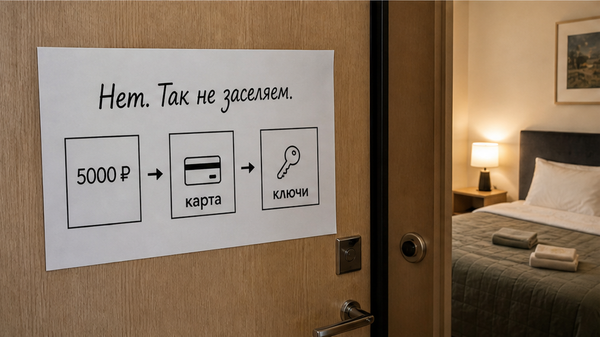
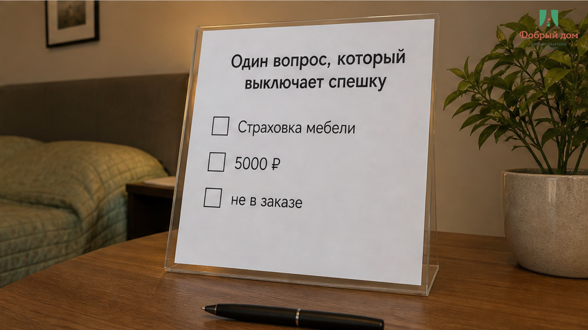
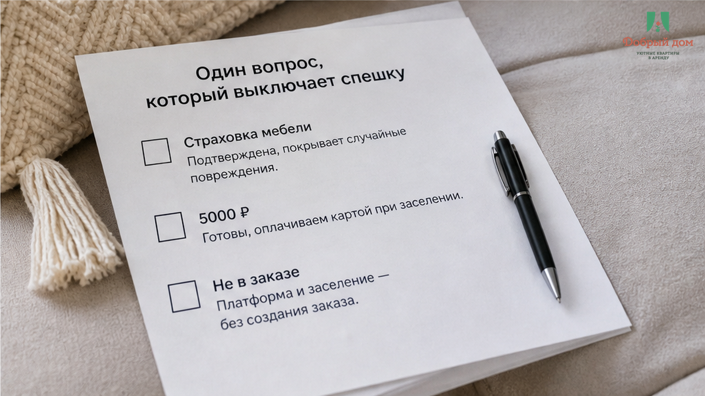

Это собирательный случай, но узнаваемый до мелочей. Гость в поиске по Тюмени поставил фильтр «без залога», выбрал квартиру на одну ночь за 4 800 ₽, оплатил бронь на площадке и поехал заселяться. В карточке не было ни слова про депозит, в условиях брони — тоже. Уже у двери, с чемоданом и ребёнком, который устал ждать, он услышал: «Страховой залог пять тысяч, на карту, потом ключи». Телефон с QR-кодом уже протянули. Гость показывает экран: «У вас же в фильтре „без залога“, я специально выбирал». В ответ — спокойно: «Это не залог, это страховка мебели». Сумма та же, момент тот же — до ключей. Только деньги просят перевести физлицу, мимо брони, мимо площадки и без строки в заказе.
И сломалось здесь не «дорого» и не «жадный хозяин». Сломалось соответствие фильтру «без залога» и новому переводу 5 000 ₽ физлицу у двери. Человек выбрал квартиру по конкретному признаку, площадка этот признак показала, бронь подтвердила — а потом условия поменялись там, где отказаться тяжелее всего. Уставший ребёнок рядом, вечер, чемодан на площадке, ключи за дверью. Я хост посуточной в Тюмени. Это «Добрый дом». Такие истории можно спокойно обсудить в Telegram или MAX, без публикации реквизитов.


Словом «залог» часто называют разные вещи. Отсюда и путаница. Первая ситуация — обеспечительный платёж, который раскрыт заранее. В карточке написано: залог 5 000 ₽, возврат после выезда в такой-то срок. Гость видит это до оплаты, может сравнить варианты и решить, подходит ему квартира или нет. Можно спорить о сумме, сроке возврата, правилах осмотра. Но нельзя сказать, что условие спрятали: оно было на витрине.
Вторая ситуация — остаток за проживание. Иногда площадка принимает не всю сумму, а часть, а доплата происходит при заселении. Это нормально, когда порядок указан в брони: сколько оплачено, сколько остаётся и почему итог совпадает с ценой проживания. Здесь нет сюрприза, есть понятная математика. О том, как читать цену и итоговую сумму, я писал в материале «В карточке 3 400 за ночь, на оплате 8 816 за две».
Третья ситуация — та самая «страховка мебели» у двери. Её нет в карточке, нет в условиях, нет в оплаченном заказе. Она появляется именно в момент, когда гостю неудобно остановиться и проверить. Её предлагают отправить на личную карту и называют как угодно: страховой, на всякий случай, за имущество. Но название не меняет сути: перед ключами появился новый перевод, которого не было в договорённости.
Отдельно про Авито. В правилах для хозяев при онлайн-бронировании есть понятная логика: оплату нельзя уводить мимо площадки. Если бронь оформлена через сервис, деньги должны идти по брони. Это не вопрос вкуса и не «так у всех». Поэтому просьба перевести «страховой» на личную карту у двери — не просто неудобный способ оплаты. Это требование за пределами условий, на которые гость соглашался.



Это правило «Доброго дома». Если квартира сдаётся с обеспечительным платежом, он указан заранее: сумма, порядок и срок возврата. Гость видит условие до бронирования. Если в карточке залога нет — он не возникает на лестничной площадке под другим названием. Придумать пять тысяч на пороге и назвать их «страховкой мебели» можно. Но это не делает требование частью брони.
Сам залог обычно не пугает так, как пугает подмена. Запрос «квартиры посуточно тюмень» часто ведёт людей к одному и тому же вопросу: где условия понятны до оплаты, а не после приезда. Подвох не в том, что квартира может быть с залогом. Подвох — когда гость выбрал «без залога», а потом получает новый счёт перед дверью. Похожую развилку, когда условие заявлено одним образом, а на месте появляется другое, разбирал здесь: «Стиральная в карточке и залог».
У вас уже просили «страховой» перевод на карту, хотя в фильтре было «без залога»? Можно написать в Telegram или MAX и показать условия без личных данных.

У двери редко помогает длинный спор. Там работает усталость, спешка и мысль: «Лишь бы уже попасть внутрь». Поэтому лучше не доказывать, кто прав, а задать один спокойный вопрос и открыть заказ на телефоне.
«Где в условиях брони и в карточке написано, что перед ключами нужно перевести 5 000 ₽ на личную карту?»
После этого не нужно принимать решение за двадцать секунд. Откройте заказ и посмотрите сумму, условия и переписку. Сохраните скриншот фильтра «без залога» и блока условий, если не сделали этого раньше. Если бронь оформлена онлайн, пишите в поддержку из самого заказа — пока объявление, переписка и детали бронирования перед глазами.
Если суммы нет в брони, это не становится обязательным платежом только потому, что вы стоите у двери. Особенно когда речь о переводе по СБП на карту физлица: в заказе он не отражён, условия возврата не закреплены. Похожий сценарий бывает, когда после оплаты через площадку гостя просят перевести ещё раз в чате. Об этом есть отдельный кейс: «Оплатили на Авито, просят перевести ещё раз». А история с дополнительной суммой прямо на пороге — здесь: «Оплатил за двоих, у двери попросили доплату за третьего».

Сначала проверка. Потом перевод. Не наоборот.
Фильтр «без залога» — не декоративная надпись. По нему гость выбирает, сравнивает и отказывается от других вариантов. Если обещание действует только до оплаты, а у двери превращается в «страховку мебели», значит, проблема не в слове. Проблема в том, что условия поменяли после бронирования.
Наш вывод простой. Бронь — это договорённость до двери, а не приглашение переписать условия на лестничной площадке.
Если нужна квартира посуточно в Тюмени с условиями без сюрпризов у порога — пишите: Telegram, MAX, бронирование, сайт, телефон +7 (993) 574-83-22, менеджер — Telegram.